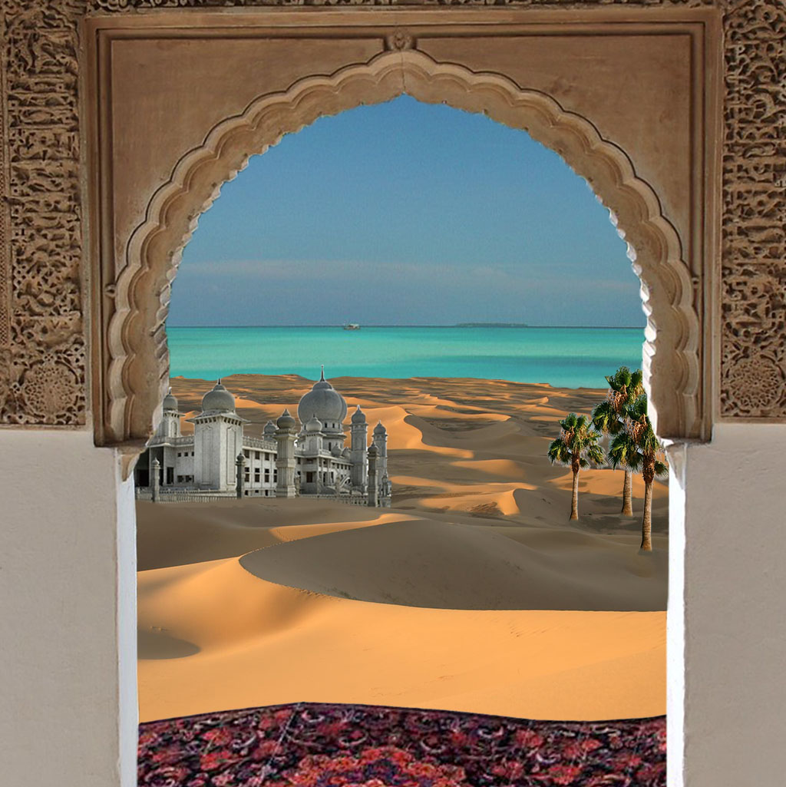
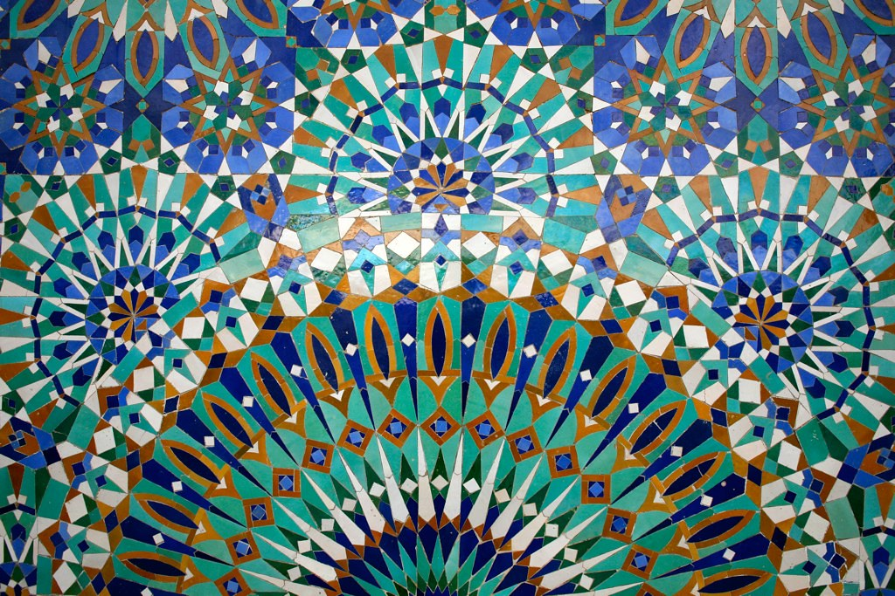

The streets of Noor El Bahr are built with arches, riads, and blue stone walls covered in zellige patterns. After the souk lost its colors, even the mosaics turned pale, as if the city itself had forogtten its identity.

